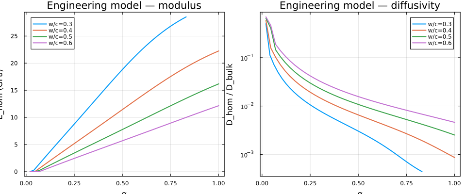
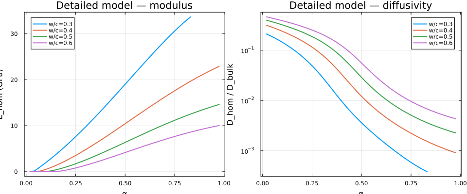
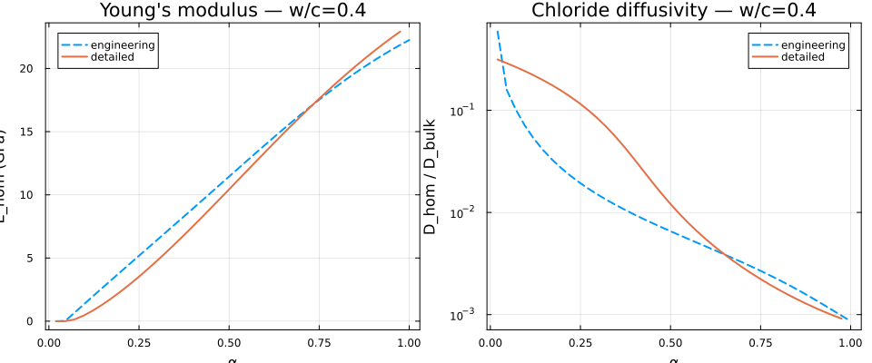
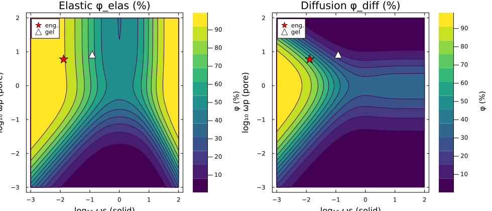
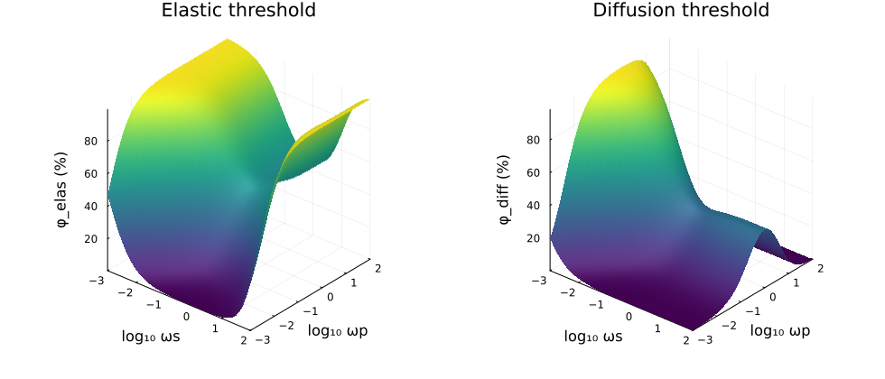

Cement paste: chloride diffusivity and elasticity
Following [46] — and mirroring the corresponding chapter of the Echoes book [42] — this page builds a multi-scale micromechanical model of Portland cement paste that simultaneously predicts its elastic moduli and its chloride diffusivity from a single microstructural description, as a function of the water-to-cement ratio $w/c$ and the hydration degree $\alpha$.
Two models of increasing complexity are presented:
- an engineering model (two scales): hydrate foam + clinker;
- a detailed model (three scales): C-S-H gel → hydrate layers → cement paste.
The self-consistent scheme is used at each scale to capture the percolation of both the solid skeleton (governing stiffness) and the pore network (governing diffusivity). The detailed model assembles a genuine composite sphere — an anhydrous core coated by inner- and outer-hydrate shells — which enters the scheme through its concentration tensors, exactly as in [42].
Because a single RVE carries several property keys at once, the same microstructure is homogenized for stiffness (:C, a 4th-order tensor) and for diffusivity (:D, a 2nd-order tensor). All diffusivities are normalized by the bulk-water value $D_\text{bulk} = 1$.
using MeanFieldHom
using TensND
using LinearAlgebra
using Plots
gr() # headless backend; GKSwstype is set to "100" in make.jl
# Isotropic property helpers.
Diso(d) = TensISO{3}(d) # isotropic 2nd-order diffusivity d·𝟏
avg_D(D) = tr(Array(D)) / 3 # scalar diffusivity from a 2nd-order tensor
const D_bulk = Diso(1.0) # capillary / bulk-water diffusivity
const Z4 = TensISO{3}(0.0, 0.0) # empty pore stiffness
const Z2 = Diso(0.0) # zero diffusivity (impervious solid)Volume fractions: Powers' hydration model
The volume fractions of the main phases follow Powers' hydration model as functions of $w/c$ and $\alpha$ [46]:
\[f_a = \frac{1-\alpha}{1+\rho_a\,w/c}, \quad f_h = \frac{\kappa_h\,\alpha}{1+\rho_a\,w/c}, \quad f_{cp} = 1 - f_a - f_h,\]
with $\rho_a = 3.13$ (clinker-to-water density ratio) and $\kappa_h = 2.13$ (hydrate volume per unit volume of clinker). Hydration stops when the pore space is filled:
\[\alpha_{\max} = \min\!\left(1,\; \frac{\rho_a\,w/c}{\kappa_h-1}\right).\]
The Tennis–Jennings correlation [45] gives the mass ratio of low-density (LD) to total C-S-H, which splits the hydration products into an inner layer (HD-C-S-H, porosity $\varphi_{HD} = 0.24$) and an outer layer (LD-C-S-H, $\varphi_{LD} = 0.37$), with a fraction $\eta = 20\%$ of crystalline hydrates (portlandite) in each.
const ρ_a, κ_h, η = 3.13, 2.13, 0.20
const φ_HD, φ_LD = 0.24, 0.37
const φ_od0 = 0.63 # initial small-capillary fraction in the outer domain
αmax(wc) = min(1.0, wc * ρ_a / (κ_h - 1.0))
fa(wc, α) = (1.0 - α) / (1.0 + ρ_a * wc)
fh(wc, α) = κ_h * α / (1.0 + ρ_a * wc)
fcp(wc, α) = max(0.0, 1.0 - fa(wc, α) - fh(wc, α))
mLD(wc, α) = min(1.0, 0.538 + α * (3.017wc - 1.347))
function μLD(wc, α)
mr = mLD(wc, α)
return mr * (1.0 - φ_HD) / (1.0 - φ_LD + mr * (φ_LD - φ_HD))
end
fihp(wc, α) = (1.0 - μLD(wc, α)) * fh(wc, α) # inner hydration products
fohp(wc, α) = μLD(wc, α) * fh(wc, α) # outer hydration products
function ψf(wc, α)
denom = 1.0 - fa(wc, α) - fihp(wc, α)
return denom < 1.0e-12 ? 0.0 : fohp(wc, α) / denom
end
function fscp(wc, α) # small capillary pores
φ = φ_od0 * (1.0 - ψf(wc, α))
return fohp(wc, α) * φ / max(1.0 - φ, 1.0e-12)
end
flcp(wc, α) = max(0.0, fcp(wc, α) - fscp(wc, α)) # large capillary pores
(fa = round(fa(0.4, 0.8), digits = 4), fcp = round(fcp(0.4, 0.8), digits = 4))(fa = 0.0888, fcp = 0.1545)Engineering model
The engineering model [46, 47] involves two homogenization steps:
- Level I — hydrate foam (self-consistent): an aging disordered assemblage of hydration products and capillary pores. The hydrates are oblate spheroids ($\omega_h = 0.013$) so that the solid percolates at the observed setting degree; the capillary pores are prolate ($\omega_{cp} = 6$) so the pore network stays connected throughout hydration.
- Level II — cement paste (Mori-Tanaka): spherical anhydrous clinker inclusions embedded in the hydrate-foam matrix.
The same phase properties serve the mechanical and the diffusion problems.
const C_anhyd = iso_stiffness_E_nu(135.0, 0.3) # anhydrous clinker
const C_hyd = iso_stiffness_E_nu(25.3, 0.29) # hydration products (calibrated)
const D_hyd = Diso(5.04e-4) # hydrate diffusivity (Yu 1991 fit)
const ω_h, ω_cp = 0.013, 6.0
function engineering_model(wc, α = -1.0)
α < 0 && (α = αmax(wc))
_fa, _fh, _fcp = fa(wc, α), fh(wc, α), fcp(wc, α)
ft = _fh + _fcp # foam total (= 1 - fa)
ft < 1.0e-10 && return (nothing, nothing)
# Level I — hydrate foam (SC): HYD taken as the reference matrix.
foam = RVE(:HYD)
add_matrix!(
foam, Ellipsoid(1.0, 1.0, ω_h), Dict(:C => C_hyd, :D => D_hyd);
symmetrize = IsoSymmetrize()
)
add_phase!(
foam, :CAP, Ellipsoid(1.0, 1.0, ω_cp), Dict(:C => Z4, :D => D_bulk);
fraction = _fcp / ft, symmetrize = IsoSymmetrize()
)
C_foam = homogenize(foam, SelfConsistent(), :C)
D_foam = homogenize(foam, SelfConsistent(), :D)
k_mu(C_foam)[1] < 1.0e-6 && return (0.0, avg_D(D_foam)) # foam not percolated
# Level II — cement paste (MT): clinker spheres in the foam matrix.
paste = RVE(:FOAM)
add_matrix!(paste, Ellipsoid(1.0, 1.0, 1.0), Dict(:C => C_foam, :D => D_foam))
add_phase!(
paste, :CLINKER, Ellipsoid(1.0, 1.0, 1.0), Dict(:C => C_anhyd, :D => Z2);
fraction = _fa
)
C_cp = homogenize(paste, MoriTanaka(), :C)
D_cp = homogenize(paste, MoriTanaka(), :D)
return (E_nu(C_cp)[1], avg_D(D_cp))
end
engineering_model(0.4, 0.6)(13.955316732214081, 0.004617955939166669)The effective Young's modulus and (log-scale) chloride diffusivity over the whole hydration range, for a set of water-to-cement ratios:
const WC_LIST = (0.30, 0.40, 0.50, 0.60)
function model_curves(model, wc; n = 40)
αs = range(0.02, αmax(wc); length = n)
E = Float64[]
D = Float64[]
a = Float64[]
for α in αs
e, d = model(wc, α)
(e === nothing || d === nothing) && continue
push!(a, α); push!(E, e); push!(D, d)
end
return a, E, D
end
function plot_model(model, title)
pE = plot(; xlabel = "α", ylabel = "E_hom (GPa)", title = "$title — modulus",
legend = :topleft, framestyle = :box)
pD = plot(; xlabel = "α", ylabel = "D_hom / D_bulk", yscale = :log10,
title = "$title — diffusivity", legend = :topright, framestyle = :box)
for wc in WC_LIST
a, E, D = model_curves(model, wc)
plot!(pE, a, E; label = "w/c=$wc", lw = 2)
plot!(pD, a, max.(D, 1.0e-8); label = "w/c=$wc", lw = 2)
end
return plot(pE, pD; layout = (1, 2), size = (960, 400))
end
plot_model(engineering_model, "Engineering model")
Detailed model
The detailed three-scale model tracks the C-S-H gel microstructure at the nanometer scale, the inner/outer hydrate layers at the micrometer scale, and the cement-paste assembly at the grain scale.
Level 0 — C-S-H gels
Both HD- and LD-C-S-H gels are self-consistent assemblages of oblate solid bricks ($\omega_s = 0.12$, $E = 63$ GPa, $\nu = 0.27$, impervious) and prolate gel pores ($\omega_p = 1/\omega_s \approx 8.3$, $D_{gel} = 0.025\,D_\text{bulk}$). The prolate pore shape is what keeps the gel diffusivity non-zero at the HD porosity $\varphi_{HD} = 0.24$. The gel properties are fixed (independent of $w/c$ and $\alpha$), so they are computed once.
const ω_s = 0.12
const ω_p = 1.0 / ω_s
const C_brick = iso_stiffness_E_nu(63.0, 0.27)
const C_crystal = iso_stiffness_E_nu(42.3, 0.324) # portlandite
const D_gel = Diso(0.025)
function homogenize_csh(φ)
gel = RVE(:BRICK)
add_matrix!(
gel, Ellipsoid(1.0, 1.0, ω_s), Dict(:C => C_brick, :D => Z2);
symmetrize = IsoSymmetrize()
)
add_phase!(
gel, :PORE, Ellipsoid(1.0, 1.0, ω_p), Dict(:C => Z4, :D => D_gel);
fraction = φ, symmetrize = IsoSymmetrize()
)
C = homogenize(gel, SelfConsistent(), :C)
D = homogenize(gel, SelfConsistent(), :D)
return C, D
end
C_HD, D_HD = homogenize_csh(φ_HD)
C_LD, D_LD = homogenize_csh(φ_LD)
(E_HD = round(E_nu(C_HD)[1], digits = 2), D_HD = round(avg_D(D_HD), sigdigits = 3),
E_LD = round(E_nu(C_LD)[1], digits = 2), D_LD = round(avg_D(D_LD), sigdigits = 3))(E_HD = 31.04, D_HD = 0.000443, E_LD = 17.59, D_LD = 0.0016)Level I — inner and outer hydrate layers
The inner layer is a self-consistent mixture of HD-C-S-H gel and spherical nano-crystals. The outer layer is built in two SC steps: oblate LD-C-S-H foam ($\omega_{LD} = 0.14$, the aspect ratio that controls its setting threshold) mixed with spherical small capillary pores, then folded together with spherical micro-crystals.
const ω_LD = 0.14
function inner_layer_props()
r = RVE(:CSH)
add_matrix!(r, Ellipsoid(1.0, 1.0, 1.0), Dict(:C => C_HD, :D => D_HD))
add_phase!(
r, :CRYSTAL, Ellipsoid(1.0, 1.0, 1.0), Dict(:C => C_crystal, :D => Z2);
fraction = η
)
return homogenize(r, SelfConsistent(), :C), homogenize(r, SelfConsistent(), :D)
end
const C_inner, D_inner = inner_layer_props() # fixed, α-independent
function outer_layer_props(wc, α)
_fohp, _fscp = fohp(wc, α), fscp(wc, α)
f_ld = (1.0 - η) * _fohp
f_tot = f_ld + _fscp
f_tot < 1.0e-12 && return C_LD, D_LD
φ_scp = _fscp / f_tot
# Step 1 — oblate LD-C-S-H foam + spherical small capillary pores.
r1 = RVE(:LDCSH)
add_matrix!(
r1, Ellipsoid(1.0, 1.0, ω_LD), Dict(:C => C_LD, :D => D_LD);
symmetrize = IsoSymmetrize()
)
add_phase!(
r1, :SCP, Ellipsoid(1.0, 1.0, 1.0), Dict(:C => Z4, :D => D_bulk);
fraction = φ_scp
)
C1 = homogenize(r1, SelfConsistent(), :C)
D1 = homogenize(r1, SelfConsistent(), :D)
# Step 2 — outer C-S-H + spherical micro-crystals.
η_out = η * _fohp / (_fohp + _fscp)
r2 = RVE(:CSH)
add_matrix!(r2, Ellipsoid(1.0, 1.0, 1.0), Dict(:C => C1, :D => D1))
add_phase!(
r2, :CRYSTAL, Ellipsoid(1.0, 1.0, 1.0), Dict(:C => C_crystal, :D => Z2);
fraction = η_out
)
return homogenize(r2, SelfConsistent(), :C), homogenize(r2, SelfConsistent(), :D)
endLevel II — cement paste
The paste is a generalized self-consistent scheme with two inclusion types: a three-layer composite sphere (anhydrous core + inner layer + outer layer) and spherical large capillary pores. The layer radii are recovered from the cumulative layer volume fractions; because a LayeredSphere stores one property family, the stiffness and diffusivity problems each get their own sphere (same radii, different per-layer moduli).
# Ascending radii from layer volume fractions g₁,…,g_M (outer radius = 1).
function layer_radii(gs)
c = cumsum(collect(gs))
total = c[end]
return ntuple(k -> (c[k] / total)^(1 / 3), length(gs))
end
# Coerce a homogenized isotropic result to a TensISO the sphere can store.
iso_C(C) = (k = k_mu(C); iso_stiffness(k[1], k[2]))
iso_D(D) = Diso(avg_D(D))
function detailed_model(wc, α = -1.0)
α < 0 && (α = αmax(wc))
_fa, _fihp, _fohp = fa(wc, α), fihp(wc, α), fohp(wc, α)
_fscp, _flcp = fscp(wc, α), flcp(wc, α)
g = (_fa, _fihp, _fohp + _fscp) # core, inner, outer
f_layers = sum(g)
f_layers < 1.0e-10 && return (nothing, nothing)
g[1] < 1.0e-10 && return (nothing, nothing) # no anhydrous core
C_outer, D_outer = outer_layer_props(wc, α)
radii = layer_radii(g)
sphere_C = LayeredSphere(radii, (C_anhyd, iso_C(C_inner), iso_C(C_outer)))
sphere_D = LayeredSphere(radii, (Z2, iso_D(D_inner), iso_D(D_outer)))
rC = RVE(:PASTE)
add_matrix!(rC, Ellipsoid(1.0, 1.0, 1.0), Dict(:C => C_LD)) # SC: reference only
add_phase!(rC, :LAYERS, sphere_C, Dict(:C => C_anhyd); fraction = f_layers)
add_phase!(rC, :LCP, Ellipsoid(1.0, 1.0, 1.0), Dict(:C => Z4); fraction = _flcp)
C_cp = homogenize(rC, SelfConsistent(), :C)
rD = RVE(:PASTE)
add_matrix!(rD, Ellipsoid(1.0, 1.0, 1.0), Dict(:D => D_LD))
add_phase!(rD, :LAYERS, sphere_D, Dict(:D => D_bulk); fraction = f_layers)
add_phase!(rD, :LCP, Ellipsoid(1.0, 1.0, 1.0), Dict(:D => D_bulk); fraction = _flcp)
D_cp = homogenize(rD, SelfConsistent(), :D)
return (E_nu(C_cp)[1], avg_D(D_cp))
end
detailed_model(0.4, 0.6)(13.382003926144565, 0.00539815112198663)plot_model(detailed_model, "Detailed model")
Comparison of both models
The two models predict consistent trends. The engineering model is faster but relies on effective hydrate properties calibrated from mature paste; the detailed model is richer in microstructural content and agrees more closely with experiment across the full hydration range [46]. For a given $w/c$ both predict a percolation threshold in stiffness near the observed setting degree, and a sharp drop in diffusivity at intermediate-to-high hydration as the large capillary pores disconnect and transport is forced through the poorly-diffusive gel.
wc = 0.4
ae, Ee, De = model_curves(engineering_model, wc)
ad, Ed, Dd = model_curves(detailed_model, wc)
pE = plot(; xlabel = "α", ylabel = "E_hom (GPa)", title = "Young's modulus — w/c=$wc",
legend = :topleft, framestyle = :box)
plot!(pE, ae, Ee; label = "engineering", lw = 2, ls = :dash)
plot!(pE, ad, Ed; label = "detailed", lw = 2)
pD = plot(; xlabel = "α", ylabel = "D_hom / D_bulk", yscale = :log10,
title = "Chloride diffusivity — w/c=$wc", legend = :topright, framestyle = :box)
plot!(pD, ae, max.(De, 1.0e-8); label = "engineering", lw = 2, ls = :dash)
plot!(pD, ad, max.(Dd, 1.0e-8); label = "detailed", lw = 2)
plot(pE, pD; layout = (1, 2), size = (960, 400))
Percolation diagrams: role of the inclusion shapes
The oblate/prolate aspect ratios of the engineering model are not free: they are fixed by requiring the elastic and diffusion percolation thresholds to fall at the porosities observed experimentally [46]. For a self-consistent two-phase medium of solid spheroids (aspect ratio $\omega_s$, $\mathbb C_s \neq 0$, impervious) and pore spheroids ($\omega_p$, $\mathbb C_p = 0$, $\mathbf D_p \neq 0$), both thresholds depend only on the two shapes, not on the (non-zero) modulus values.
The diffusion threshold $\varphi^{\rm diff}$ — the porosity above which the pore network conducts — follows in closed form from the 2nd-order SC equation at $\mathbf D^{\rm hom}\to 0^+$:
\[\varphi^{\rm diff} = \frac{\operatorname{tr}\mathbf Q_s^{-1}} {\operatorname{tr}\mathbf P_p^{-1} + \operatorname{tr}\mathbf Q_s^{-1}}, \qquad \mathbf P_p = \mathbf P(\omega_p,\mathbf 1),\quad \mathbf Q_s = \mathbf 1 - \mathbf P(\omega_s,\mathbf 1).\]
The elastic threshold $\varphi^{\rm elas}$ — the porosity above which the solid skeleton loses rigidity, $\mathbb C^{\rm hom}\to 0^+$ — reduces to a coupled system in the solid fraction $f_s$ and the Poisson ratio $\nu$ of the SC medium, involving the Hill tensor $\mathbb P_s = \mathbb P(\omega_s,\mathbb C(\nu))$ of the solid and the dual Hill tensor $\mathbb Q_p = \mathbb C - \mathbb C:\mathbb P_p:\mathbb C$ of the pore (with $\mathbb C(\nu)$ the SC medium normalized to unit Young's modulus):
\[f_s = \frac{\operatorname{tr}(\mathbb J : \mathbb Q_p^{-1})} {(1-2\nu)^2\operatorname{tr}(\mathbb J:\mathbb P_s^{-1}) + \operatorname{tr}(\mathbb J:\mathbb Q_p^{-1})}, \qquad f_s (1+\nu)^2 \operatorname{tr}(\mathbb K:\mathbb P_s^{-1}) = (1-f_s)\operatorname{tr}(\mathbb K:\mathbb Q_p^{-1}),\]
with $\varphi^{\rm elas} = 1 - f_s$. These are exactly the relations of the Echoes book [42]; the two implementations agree to machine precision.
# Frobenius double-double contraction ⟨A,B⟩ = A_ijkl B_ijkl, matching the
# 6×6 Mandel `tr(A·B)` used in Echoes.
frob(A, B) = sum(Array(A) .* Array(B))
const 𝕁 = TensISO{3}(1.0, 0.0)
const 𝕂 = TensISO{3}(0.0, 1.0)
function bisect_root(f, lo, hi; n = 60)
flo = f(lo)
for _ in 1:n
m = (lo + hi) / 2
if flo * f(m) <= 0
hi = m
else
lo = m; flo = f(lo)
end
end
return (lo + hi) / 2
end
# Elastic percolation threshold φ_elas = 1 - f_s (pore fraction).
function φ_elas(ωs, ωp)
Es, Ep = Ellipsoid(1.0, 1.0, ωs), Ellipsoid(1.0, 1.0, ωp)
function invPQ(ν)
C = iso_stiffness_E_nu(1.0, ν)
iPs = inv(hill_tensor(Es, C))
iQp = inv(C - C ⊡ hill_tensor(Ep, C) ⊡ C) # dual Hill of the pore
return iPs, iQp
end
solf(iPs, iQp, ν) = (a = frob(𝕁, iPs); b = frob(𝕁, iQp); b / ((1 - 2ν)^2 * a + b))
function eqν(ν)
iPs, iQp = invPQ(ν)
f = solf(iPs, iQp, ν)
return f * (1 + ν)^2 * frob(𝕂, iPs) - (1 - f) * frob(𝕂, iQp)
end
ν = bisect_root(eqν, 0.0, 0.4)
iPs, iQp = invPQ(ν)
return 1 - solf(iPs, iQp, ν)
end
# Diffusion percolation threshold (pore fraction) — closed form.
# `hill_tensor` returns a 2nd-order `Tens`; `tr`, `inv` and tensor subtraction
# are intrinsic TensND operations, so no array materialization is needed.
function φ_diff(ωs, ωp)
Pp = hill_tensor(Ellipsoid(1.0, 1.0, ωp), TensISO{3}(1.0))
Ps = hill_tensor(Ellipsoid(1.0, 1.0, ωs), TensISO{3}(1.0))
a = tr(inv(Pp))
b = tr(inv(TensISO{3}(1.0) - Ps))
return b / (a + b)
end
(elastic = round(100 * φ_elas(0.013, 6.0), digits = 1),
diffusion = round(100 * φ_diff(0.013, 6.0), digits = 1))(elastic = 92.6, diffusion = 65.5)The two thresholds, mapped over $(\log_{10}\omega_s, \log_{10}\omega_p)$, with the calibration points of the engineering model ($\star$) and of the C-S-H gel ($\triangle$):
n = 41
logω = range(-3.0, 2.0; length = n)
ω = 10.0 .^ logω
Ze = [100 * φ_elas(ω[i], ω[j]) for j in 1:n, i in 1:n] # rows = ωp, cols = ωs
Zd = [100 * φ_diff(ω[i], ω[j]) for j in 1:n, i in 1:n]
cal_s = (log10(0.013), log10(0.12))
cal_p = (log10(6.0), log10(1 / 0.12))
function threshold_panel(Z, title)
p = contour(logω, logω, Z; fill = true, c = :viridis, levels = 12,
xlabel = "log₁₀ ωs (solid)", ylabel = "log₁₀ ωp (pore)",
title = title, colorbar_title = " φ (%)", framestyle = :box)
scatter!(p, [cal_s[1]], [cal_p[1]]; m = :star5, ms = 9, c = :red, label = "eng.")
scatter!(p, [cal_s[2]], [cal_p[2]]; m = :utriangle, ms = 7, c = :white, label = "gel")
return p
end
plot(threshold_panel(Ze, "Elastic φ_elas (%)"),
threshold_panel(Zd, "Diffusion φ_diff (%)");
layout = (1, 2), size = (980, 420))
The same two threshold maps as 3D surfaces over $(\log_{10}\omega_s, \log_{10}\omega_p)$ — the Echoes book renders these interactively (Plotly); here they are static GR surfaces of the same Ze, Zd arrays:
sE = surface(logω, logω, Ze; xlabel = "log₁₀ ωs", ylabel = "log₁₀ ωp",
zlabel = "φ_elas (%)", title = "Elastic threshold", c = :viridis,
camera = (40, 30), colorbar = false)
sD = surface(logω, logω, Zd; xlabel = "log₁₀ ωs", ylabel = "log₁₀ ωp",
zlabel = "φ_diff (%)", title = "Diffusion threshold", c = :viridis,
camera = (40, 30), colorbar = false)
plot(sE, sD; layout = (1, 2), size = (980, 420))
At the engineering calibration point the solid is a very thin oblate platelet ($\omega_s = 0.013$): it percolates at a tiny solid fraction, so the skeleton carries load up to a high porosity, $\varphi^{\rm elas} \approx 93\%$ — the paste sets early (low $\alpha$). The prolate pores combined with those thin solid barriers give $\varphi^{\rm diff} \approx 66\%$, so the capillary network disconnects only at low porosity (high $\alpha$): the elastic and diffusion thresholds are well separated, which is exactly the behavior needed to reproduce both the early set and the late diffusivity drop. The C-S-H gel point sits at $\varphi^{\rm elas} \approx 64\%$ and $\varphi^{\rm diff} \approx 17\%$, so at the HD porosity $\varphi_{HD} = 0.24$ the gel is simultaneously load-bearing ($0.24 < 0.64$) and diffusive ($0.24 > 0.17$) — the prolate gel pores are what keep $\mathbf D_{HD} > 0$.
Evaluated with the compiled Echoes library, $\varphi^{\rm elas}$ and $\varphi^{\rm diff}$ at these points coincide with the values above to the third decimal (identical Poisson ratio at the elastic root), confirming that MeanFieldHom and Echoes share the same Hill/dual-Hill kernels.